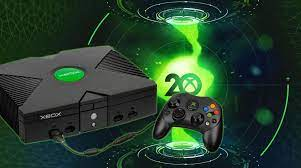
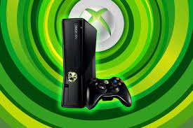
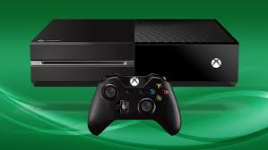
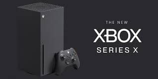

La primera consola de Microsoft fue la XBox que fue una revolucion para la epoca. Esta consola era poco pesada e incorporo unos controladores revolucionarios para la epoca.
La segunda consola de Microsoft fue la XBox 360 y fue lanzada en noviembre de 2005 e incluia por primera vez servivio de juego en linea de pago. Esta consola fue revolucionaria al igual que la anterior por sus controladores y tambien salio con varios juagos que marcaron una epoca.
La XBox ONE es una consola que optimizo el servicio de juego en linea de pago agrgando juegos de prueba y tambien mejoro sus controladores. Esta consola salio a la luz en junio de 2016
La XBox Series S/X es una consola que salio a la venta con dos formatos posibles para adaptarse a el diferente presupuesto de las personas algo que fue revolucionario en la industria. Salio a la luz en noviembre de 2020.
